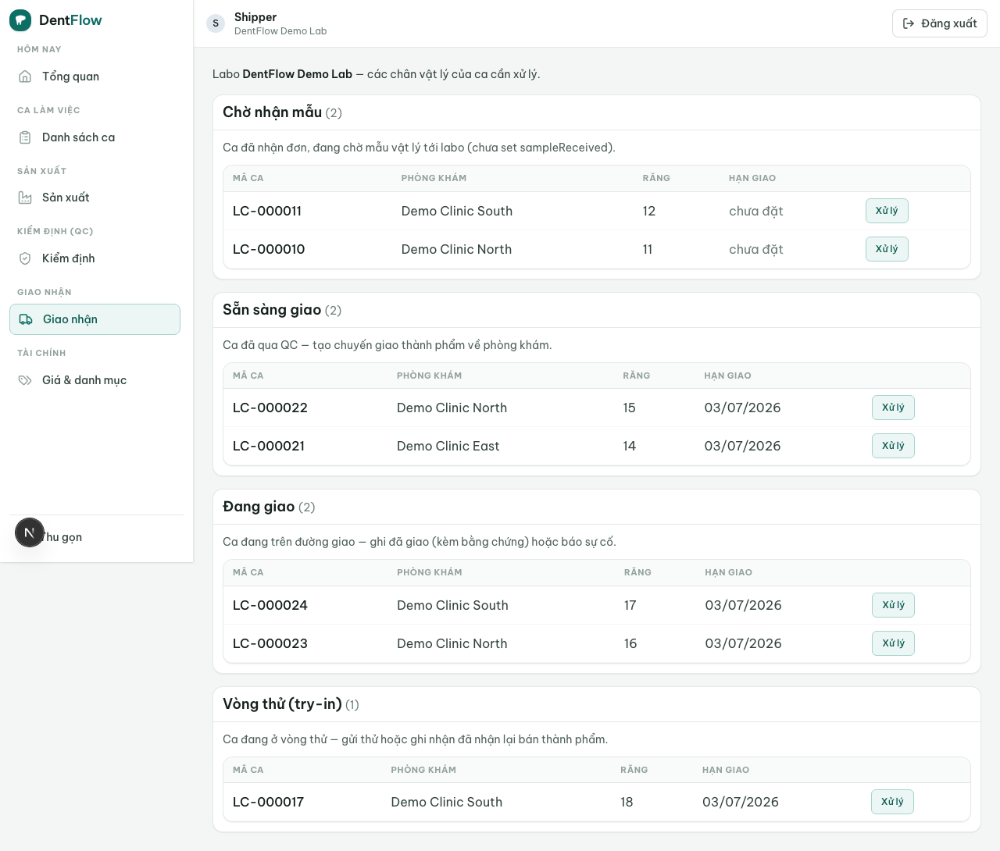

Giao & theo dõi
Ở VN răng đi lại bằng shipper, Grab, xe khách liên tỉnh — một bản ghi giao duy nhất mà cả labo và phòng khám cùng đọc chấm dứt cảnh "răng đang ở đâu?" hỏi qua Zalo.
Tính năng này quản lý mọi chân vật lý của một case, không chỉ chuyến giao cuối. Một case điển hình đi qua ba leg rời nhau: inbound (mẫu vật lý vào labo), try-in (bán thành phẩm gửi thử rồi quay lại), và outbound (giao thành phẩm đã đạt QC). Mỗi leg ghi phương thức giao, bằng chứng và mốc thời gian; mọi mốc bắn thông báo tự động qua Zalo bridge thay cho cú nhắn thủ công. Đây là hiện thực các cạnh vật lý của vòng đời case — luật trạng thái là SSOT ở tài liệu workflow, ở đây chỉ mô tả thao tác.

Đánh dấu sẵn sàng giao
Chỉ case ở trạng thái ready_to_ship — tức đã đạt QC — mới tạo được leg outbound và chuyển sang shipped (BR-01). Đây là chốt chặn cứng kế thừa từ cổng QC: không case nào rời labo mà chưa vượt QC một lần. Cố tạo chuyến giao cho case chưa qua QC sẽ bị hệ thống từ chối.
Chọn phương thức giao
Mỗi chuyến bắt buộc ghi phương thức giao từ tập sát thực tế logistics VN (BR-02):
- Labo tự giao / pickup — labo tự chạy.
- Shipper nội thành — giao trong ngày, cùng quận / nội thành.
- Grab / xe ôm — đơn lẻ, gấp.
- Đối tác ship — GHN / GHTK / Viettel Post, kèm tên đối tác + mã vận đơn nếu có.
- Relay bến xe — gửi xe khách liên tỉnh, người nhận ra bến lấy. Đây là mắt xích dễ thất lạc nhất nên bắt buộc ghi thêm tuyến / nhà xe, biển số hoặc giờ xe, và mã / SĐT người nhận tại bến.
Chuyển sang delivered bắt buộc có bằng chứng giao (BR-03): ảnh chụp lúc giao, chữ ký / họ tên người nhận, hoặc xác nhận của phòng khám. Mỗi lần cập nhật trạng thái tự bắn thông báo qua Zalo bridge (tối thiểu khi shipped và delivered); thông báo lỗi mạng thì retry + fallback, không chặn việc cập nhật trạng thái (BR-04).
Phòng khám xác nhận đã nhận
Phòng khám xác nhận đã nhận mà không cần tài khoản nặng (BR-05): mỗi case shipped có một link theo dõi /track/<token> phát tại thời điểm giao — token chính là cơ chế ủy quyền, không cần đăng nhập. Labo có thể xác nhận thay mặt nhưng phải ghi rõ ai xác nhận và lúc nào. Trong vòng try-in, phòng khám cũng xác nhận "đã nhận bán thành phẩm thử / đã gửi trả" gọn một chạm, mobile-first.
Leg inbound & theo dõi SLA
Khi mẫu vật lý (impression / mẫu hàm) tới labo, điều phối đóng leg inbound để đặt cờ sampleReceived=true + sampleReceivedAt trên case (BR-09). Case full-digital (chỉ có STL) coi như inbound đã đóng ngay khi submitted, không cần leg vật lý.
Đây là điểm mấu chốt: ở VN đồng hồ SLA chỉ chạy từ lúc labo nhận mẫu vật lý, không phải từ lúc đơn số tới (BR-06). Rush = 48h tính từ khi nhận mẫu; in-city standard thường 2–5 ngày. Giao trễ so với due date phải cảnh báo và ghi nhận lý do trễ. Vì thế cờ sampleReceived — chứ không phải lúc đơn được tạo — mới quyết định due date.
| Leg | Hướng | Ghi nhận |
|---|---|---|
| Inbound | Phòng khám → labo | Nhận mẫu → bật sampleReceived (khởi động SLA) |
| Try-in | Labo ↔ phòng khám (hai chiều, có thể lặp) | Cặp try_in_out + try_in_return |
| Outbound | Labo → phòng khám | ready_to_ship → shipped → delivered |
Sự cố giao nhận
Thất lạc ở bất kỳ leg nào (gửi đi nhưng không tới) mở trạng thái sự cố và không tự nhảy trạng thái đích — phải điều tra rồi giao lại hoặc làm lại (BR-07). Giao nhầm phòng khám / sai case thì thu hồi, ghi nhận, giao lại đúng; bằng chứng giao sai được lưu để truy nguồn (BR-08). Mẫu vào trễ (đơn đã submitted nhưng mẫu quá hạn chưa tới) mở sự cố mẫu vào, nhắc phòng khám gửi lại / lấy dấu lại, sản xuất vẫn bị gác.
Với relay bến xe, leg treo ở shipped quá lâu không tự đánh dấu thất lạc — hệ thống nhắc và cho ghi chú "đang ở bến" cho tới khi quá ngưỡng. Đánh dấu sự cố ở phase này là thủ công; nhắc tự động cần scheduler và để cho lượt sau. Nếu SLA hiển thị chưa chạy, kiểm tra đã đóng leg inbound (nhận mẫu) chưa — đồng hồ đếm từ sampleReceivedAt, không phải từ lúc tạo đơn.